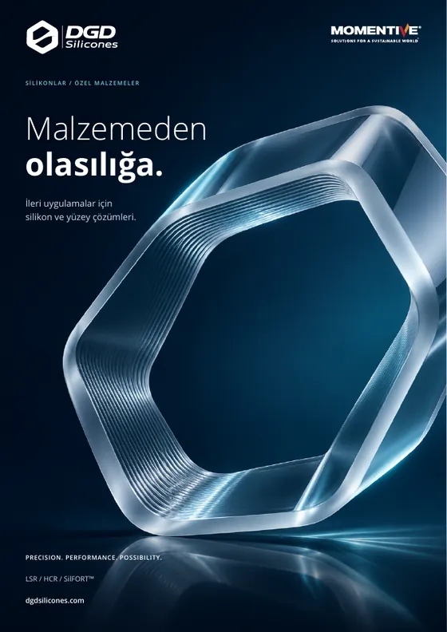

LSR
Sıvı silikon kauçuk
Hassas kalıplama.
Pompalanabilir, iki bileşenli silikon elastomerler. Karmaşık geometriler ve seri üretim için kalıplama seçenekleri.
Genel amaçlı / sağlık / kendinden yağlayıcı / kendinden yapışan / florlu / elektriksel
Silikon elastomerler / Yüzey kaplamaları
Parçanızın işlevinden yola çıkar, doğru silikonu birlikte seçeriz. LSR, HCR ve SilFORT™ ürünlerinde satış ve teknik danışmanlık.
Momentive Performance Materials distribütörü
Uygulama haritası
Sektörler arasında ilerleyin; ilgili malzeme ailelerini birlikte değerlendirelim. Bir ürün ailesi birden fazla sektörde kullanılabilir.
Tıbbi tüplerden valflere, laboratuvar bileşenlerinden cihaz parçalarına. Malzeme seçimi, tasarım ve nihai kullanım gereksinimleriyle birlikte ele alınır.
Sızdırmazlık, yapıştırma ve yalıtım ihtiyaçlarını; kimyasal temas, sıcaklık ve parça geometrisi üzerinden değerlendiren bir malzeme yaklaşımı.
Elektriksel yalıtım, iletkenlik, optik berraklık ve hassas sızdırmazlık. Cihazlardan enerji altyapısına uzanan farklı malzeme gereksinimleri.
Bağlantı elemanı keçeleri, contalar, diyaframlar ve çok bileşenli parçalar. İşlev, montaj ilişkisi ve seri üretim beklentisi bir arada.
Otomasyona uygun kalıplama, sürekli profiller, tekstil kaplamaları ve günlük ürünler. Farklı işlevleri bir araya getiren geniş bir silikon portföyü.
Saydamlığın ve yüzey kalitesinin korunduğu uygulamalar için. Plastik yüzeylerde çizilme, aşınma, hava koşulları ve kimyasal etkilere karşı kaplamalar.
Uygulamanız bu listede yoksa da yazın; alanlar örnek niteliğindedir. Uygulamanızı anlatın
Temsili görsel
Malzeme aileleri
Sıvı silikon kauçuk
Hassas kalıplama.
Pompalanabilir, iki bileşenli silikon elastomerler. Karmaşık geometriler ve seri üretim için kalıplama seçenekleri.
Genel amaçlı / sağlık / kendinden yağlayıcı / kendinden yapışan / florlu / elektriksel
Yüksek kıvamlı silikon kauçuk
Şekle ve prosese uyum.
Ekstrüzyon, kalıplama ve kalenderleme için peroksit veya platin katalizli silikon elastomerler.
Addisil™ / Tufel™ / Silplus™ / florosilikon
Koruyucu yüzey kaplamaları
Yüzeyden başlayan koruma.
Plastik yüzeylerde çizilme, aşınma, hava koşulları ve kimyasal etkilere karşı ısıl veya UV ile kürlenen kaplamalar.
Isıl sistemler / UV sistemleri / UVHC3000
Teknik danışmanlık
Uygulamayı anlamak, ürün seçiminin ilk adımıdır. Malzeme seçimini parçanın işlevi, geometrisi, çalışma koşulları ve üretim yöntemiyle birlikte ele alırız.
Görüşme isteyinSızdırmazlık, mekanik esneklik, elektriksel yalıtım, iletkenlik veya yüzey koruması. Parçanın temel görevi.
Malzeme, kesit kalınlığı, boyut, optik görünüm, yüzey yapısı ve montaj ilişkileri.
Sıcaklık, kimyasal temas, nem, UV maruziyeti, dış ortam ve mekanik yükler.
Kalıplama, ekstrüzyon, kalenderleme veya kaplama; mevcut ekipman ve çevrim beklentisi.
Uygulamaya ait standartlar, nihai ürün testleri ve doğrulanması gereken performans ölçütleri.
Ürün seçeneklerinin değerlendirilmesi, teknik bilgilerin incelenmesi ve uygulamaya göre ilerleme.

Genel katalog
Altı uygulama alanı, LSR, HCR ve SilFORT™ ürün aileleri, tipik fiziksel özellikler, test bilgileri ve ürün dizini.
Kataloğu indir PDF · 56 sayfa · Türkçe
Önizleme sürümü: PDF, site yayına alınırken eklenecek.
İletişim
Ürün satışı ve teknik danışmanlık
+90 532 521 92 93info@dgdsilicones.com
DGD Silicones Kimya San. ve Tic Ltd.